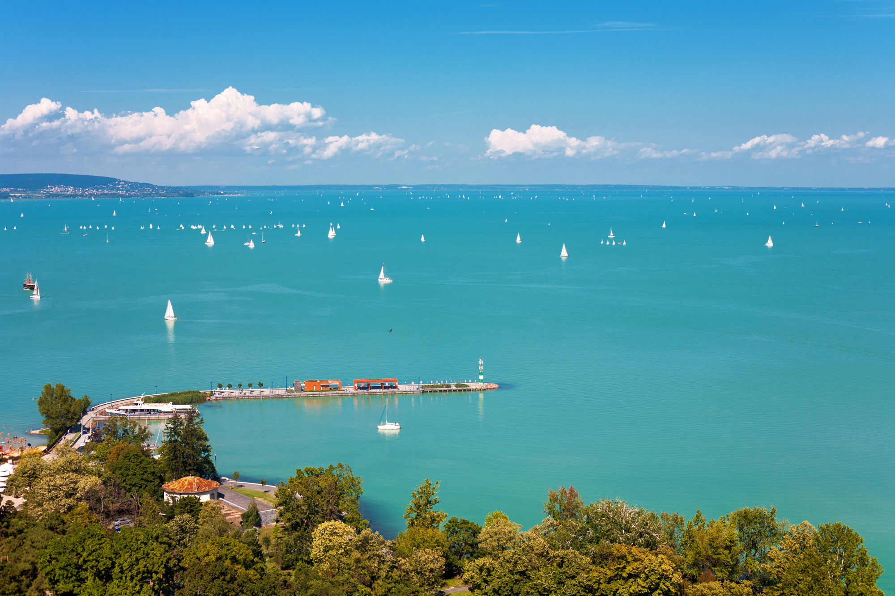
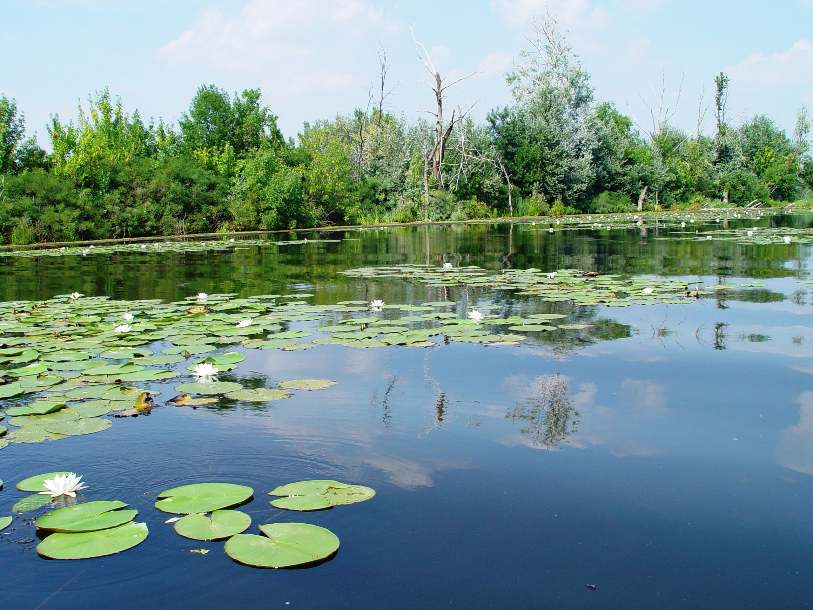
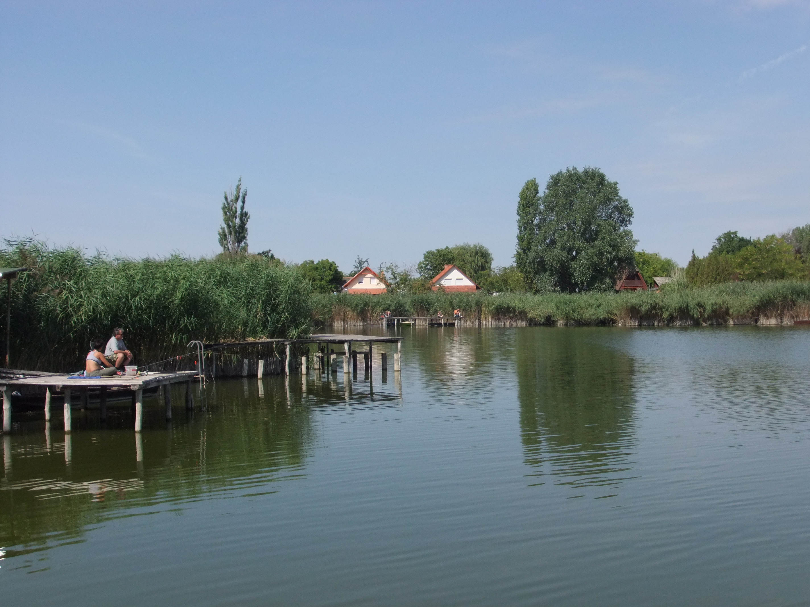

Típusa geológiailag a Velencei-tóhoz hasonlóan tektonikus eredetű, sekély vizű ároktó. 77 km hosszú, legkisebb szélessége Tihanynál 1,3 km, legnagyobb 12,7 km Balatonvilágos és Balatonalmádi között, átlagos szélessége 7,7 km, felülete 600 km².[2] Legmélyebb pontja a Tihanyi-szoros legmélyebb árkában az úgynevezett a „Tihanyi-kút”, ahol a tó medre 11-12,5 méter mélyen van.Más forrás szerint a kút mélysége 10,67 méter. A Szántód-Tihany kompjárat[10] útvonalától mintegy 100-150 méterre keletre, a parttól körülbelül 300 méterre van.

A Tisza-tó (1988-ig Kiskörei víztározó) Magyarország második legnagyobb tava és legnagyobb mesterséges tava a Tiszán, az Alföld északi részén. Létrehozásának legfontosabb okai a Kiskörei Vízerőmű működéséhez szükséges egyenletes vízhozam biztosítása volt, valamint az ugyanebben az időszakban, Tiszaújvárosban telepített új Tiszai Hőerőmű működéséhez szükséges magas vízszint biztosítása duzzasztással.

A Szelidi-tó 5 kilométer hosszú, 150-200 méter széles, 3-4 méter mély, vízfelülete megközelítőleg 80 hektár, ezzel hazánk ötödik legnagyobb természetes tava. Bács-Kiskun vármegye Kalocsai járásában, Dunapataj nagyközség külterületén található, mintegy 3 kilométerre Újtelek községtől északra, a Dunapatajt Szakmáron át Kalocsa keleti részeivel összekötő 5308-as útról letérve közelíthető meg. A tó déli partján, nyugalomba jutott futóhomok területein kellemes strandok kerültek kialakításra.